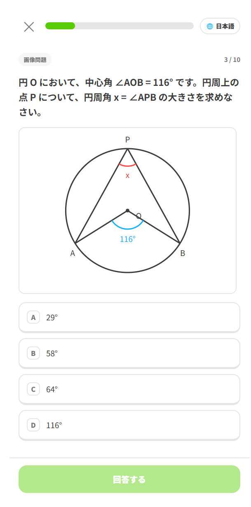
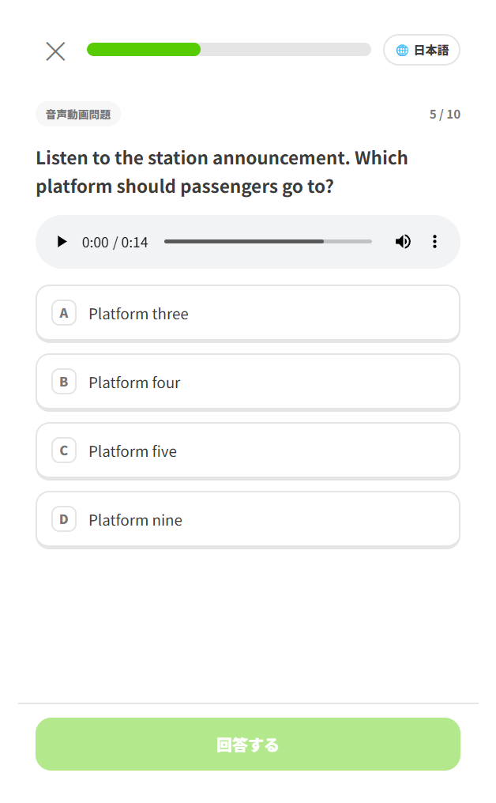

問題を解く → 間違えたところをその場で潰す → 積み上げを数字で確認する。これを毎日繰り返すだけです。この章では、その一周で何ができるのかを画面写真つきで見ていきます。
以下の写真はすべて同梱のサンプル試験（全 60 問）のもの。問題数・1 セッションの問題数・本番モードの制限時間・合格ラインは試験ごとに違いますので、数字そのものではなく画面の使い方として読んでください。
1アカウントを作ると成績が残る
最初にニックネームとパスワードを決めるだけ。メールアドレスは要りません。

一度登録すれば、どの問題を何回解いて、何回正解したかがユーザーごとに記録されます。この記録が、後で出てくる「間違え優先」の出題と成績画面の土台になります。
配布元の設定によっては、新規登録に招待コードが必要なことがあります。公開デモとして動いている場合は、ボタン 1 つでお試し用のユーザーが作られることもあります。
ログインするとホーム画面になります。ここが学習の起点です。

2出題のしかたを選べる
「学習をはじめる」を押すと、出題タイプとセッションの 2 つを選ぶ画面になります。両方選ぶとスタートできます。

出題タイプ — どの問題を出すか
「間違え優先」は、これまでの誤答率・直近で間違えたか・挑戦回数が少ないかを見て並べ替えています。まだ解いたことのない問題が真っ先に出てくるので、問題プールを一周するのにも使えます。
セッション — どれだけ解くか
| セッション | 内容 |
|---|---|
| ⏱️ 通常 | 数問だけ。1 問ごとにその場で正誤と解説が出る。スキマ時間向け |
| 📝 本番モード | 本試験と同じ問題数・制限時間。通しで解いて最後にまとめて採点 |
本番モードにはタイマーと見直しフラグが付きます。迷った問題にチェックを入れておくと、最後に出る解答一覧からその問題へ飛んで戻れます。出題は自動的に本番比率になります。

3いろいろな形式の問題を出せる
単一選択と複数選択
複数選択の問題は、当てはまるものをすべて選んで完全に一致したときだけ正解になります。1 つでも選び漏らしたり、余計に選んだりすると誤答扱いです。本試験と同じ厳しさで練習できます。
画像・音声・動画つきの問題
問題文・選択肢・解説のどれにも、画像や音声、動画を付けられます。図を読む問題も、聞き取りの問題も、そのまま練習できます。


原文と訳文の切り替え
問題に訳文が用意されていれば、画面右上の 🌐 ボタンで原文と訳文を行き来できます。回答の状態はそのままで文章だけが切り替わるので、詰まったときだけ訳を見るという使い方ができます。
訳文があるかどうかは試験によって違います。用意されていない場合、このボタンは出ません。
4間違えた問題をその場で潰せる
このアプリがいちばん力を入れているのがここです。間違えたまま先へ進ませません。
1 問ごとの即フィードバック
通常セッションでは、回答するとすぐに正誤が出ます。正解の選択肢は緑、選んだ誤答は赤、複数選択で選び漏らした正解には「選び漏れ」のタグが付きます。「解説を見る」を開けば、なぜその答えになるのかをその場で読めます。

復習ループ — 全問正解するまで再出題
セッションを解き終えたときに誤答があると、「復習する」を選べます。間違えた問題だけがもう一度出題され、それでも間違えた問題がさらに次のラウンドに回ります。全部正解するまで終わらないので、その日の取りこぼしをゼロにして終われます。


正答率が下がることを気にせず、納得いくまで叩けます。安心して何周でもどうぞ。
間違え見直し — 誤答をまとめて読み返す
結果画面の「間違えた問題を復習」からは、そのセッションで間違えた問題が一覧で開きます。正解はどれか、自分は何を選んだか、何を選び漏らしたか、そして解説が、1 画面に縦に並びます。

5成績が数字で見える
セッションごとの結果
解き終えると、正答率・合格ラインに届いたか・セクション別の内訳が出ます。どの分野で落としているかがその場で分かります。

通算の成績
ホームの「成績を見る」からは、これまでの積み上げが見られます。

| 項目 | 意味 |
|---|---|
| 挑戦した問題 / 全問数 | 問題プールをどれだけ消化したか |
| 通算正答率 | これまでの全回答での正答率 |
| のべ回答数・のべ正解数 | 積み上げた総量 |
| 連続学習日数 | 途切れずに続いている日数 |
| セクション別 正答率 | 分野ごとの得意・不得意 |
成績はいつでもリセットできます。問題を一周して知識が付いたところで測り直すと、定着度が正直に出ます。この使い方は 04. おすすめの学習方法（準備中）で詳しく扱います。
6毎日続けるとストリークが伸びる
1 日に 1 回でもセッションを最後まで解き切ると、その日が「達成」になります。連続した日数がホームと結果画面に 🔥 で表示され、節目には応援メッセージが出ます。
「今日はもう無理」という日でも、通常セッションを 1 回だけ回せば途切れません。数字を絶やさないことを目標にすると続きます。
7途中でやめられる
急に時間がなくなっても大丈夫です。画面左上の ✕ を押すと、3 つから選べます。
-
1
途中結果を見る
そこまでの結果を見て終わります。
-
2
記録せずにホームへ
なかったことにして抜けます。
-
3
続ける
中断をやめて問題に戻ります。

8スマホに入れて、電波がなくても解ける
ブラウザの「ホーム画面に追加」でアプリとして入れられます。一度開いておけば、問題文も画像・音声もスマホ側に取り込まれるので、電波の届かない場所でも問題を解けます。
成績の記録はサーバーに保存されます。オフラインでも問題は解けますが、その結果は記録されません。成績を残したいときは通信できる状態で解いてください。